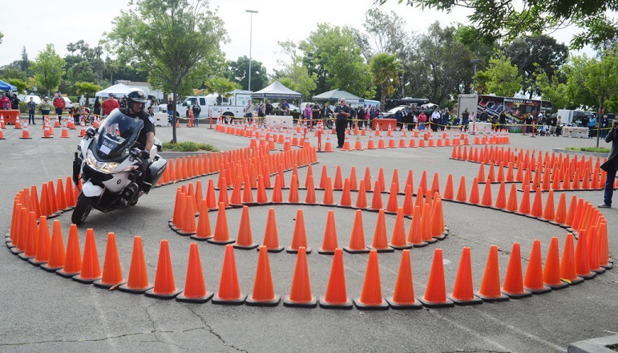

Level 5 Riders
You've completed all the lower levels of instruction. You don't have to think about manuevers, you just do. Maybe you feel ready for more challenging riding. Courses at this level of instruction provide just that. You will touch on all you've been taught, but faster or with more precision. At this level of instruction, use of a personal motorcycle or a training motorcycle varies by school.
- Prorider NW by Cascade Motorcycle Safety
- Optimum Performance Rider Training
- California SuperBike School

A glimpse into the training which motorcycle officers must endure.